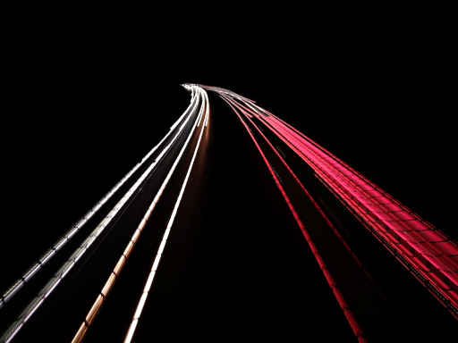
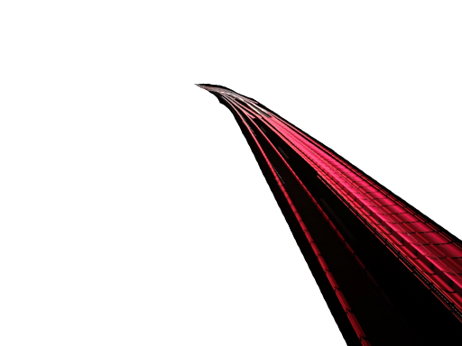
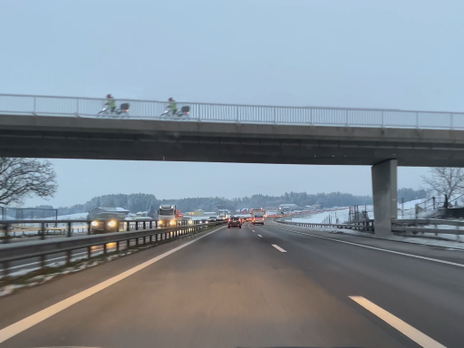

Autolicht-Trails
 Autolicht-Trails, auch bekannt als Light Painting oder Lichtmalerei, ist eine Fototechnik, bei der eine Kamera längere Belichtungszeiten verwendet, um bewegte Lichtquellen aufzunehmen und sichtbar zu machen. Dies kann beispielsweise durch das Bewegen von Taschenlampen oder Autoscheinwerfern während der Aufnahme erreicht werden. Das Ergebnis sind spektakuläre Fotos, die leuchtende Linien und Muster zeigen, die durch die Bewegung der Lichtquellen entstehen.
Autobahn
Auf der Autobahn zu fahren ist besonders schön, wenn die Landschaft rundherum frisch
verschneit ist.
Die beiden Fahradfahrer auf der Brücke sehen sich aussergewöhnlich ähnlich. Beinahe
könnte man meinen, sie seien kopiert worden.
Video
Der Arbeitsweg mit dem Auto kann für viele Menschen eine schnelle und bequeme Möglichkeit sein, von zu Hause zur Arbeit zu gelangen. Es gibt jedoch auch einige Nachteile, die berücksichtigt werden müssen, wie beispielsweise die Kosten für Benzin und eventuelle Parkgebühren am Arbeitsplatz. Auch der Zeitfaktor muss beachtet werden, da Staus oder Unfälle die Fahrtzeit verlängern können. In solchen Fällen könnten Alternativen wie das Fahrradfahren oder öffentliche Verkehrsmittel eine gute Wahl sein.